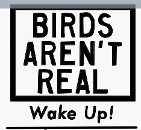

--Jed McKenna
Online this weekend, where of course conversations are always perfectly sane and rational, someone wrote the not-original-to-them idea that the world doesn’t exist and there is nothing but illusion, including us.
This writer was promptly called crazy and psychotic for their trouble.
It seems one thing all humans are experts in, is an idea of what constitutes “crazy.”
And for most folks in this obviously-here world, to say that there is no self and nothing real sets off cuckoo alarm bells.
People get agitated when faced with considering that they might not exist.
As if there’s a threat to survival if the all-important Me might not be real.
“Ridiculous!” they say, pointing in the direction of their own chest and then yours. “I’m right here, you’re right there!” Then they trot out the usual examples of speeding buses and jumping off roofs and seeing with their own eyes, and touching things that obviously could only be felt because they existed, and feelings in the body, and photographs, and other people agreeing, etc etc etc.
A million years ago I worked as a psychologist in an institution for schizophrenics. Those patients saw things that weren’t there, while absolutely convinced they were. They held conversations with people that weren’t there, pointed to receivers in their heads that weren’t there, heard voices that weren’t there.
We called them mad and they were put away for it.
That was an opposite kind of insane than this weekend’s online commenters were insisting on.
The schizophrenics I worked with were considered crazy for seeing things that weren’t there.
This weekend’s online folks were saying it’s bonkers to not see something (reality and the self) that obviously is there.
So which is it- is it psychotic to see or to not see things that aren’t real?
Hmmm.
Yet both versions of "crazy" share a commonality too.
Because when it comes to the, “There is a self and there is a world and if you don't see it you're nuts" conversation,
the proof that is always given- the proof of sanity, reality, existence- always seems to depend on there being a perceiver, perceiving.
As in- we see things. We feel things. We think things.
Just like my former patients.
We're convinced they're real.
Just like my former patients.
See a pen and pick it up. "The pen is real," we say.
Even though that pen exists in our eyeballs and fingertips, not provably outside them.
This is what we call "reality" – those personal perceptions.
And then this individualized sense of actuality requires belief - a belief that human senses and thoughts indicate something other than us, something outside us, something that maintains and continues on without us.
Something which is most certainly there all the time, and is most certainly solid, and most certainly continues to exist even after it's no longer perceived.
Close our eyes, the pen disappears.
We insist it is still there.
Based on our perception and an idea, we are completely certain about what's actual and what’s imagined.
There is no other proof.
Turns out, what is used to prove our existence, is our existence.
Yeah that’s not at all nuts.
Perhaps you can see that it’s completely illogical, batty even, to define existence based on variable and fluctuating human perceptions, thoughts, and experiences.
Perhaps you can see that if that’s our version of sane,
If that’s where we live,
in that movable, varies-from-person-to-person, depends-on-the-light-and-time-of-day, unsubstantiatable personal fiction-
then reality is not real.
"Reality" is variable, and it depends on us.
In which case, the road to crazy-town is short.
Because we already live there.
Watch Judy and Shiv Sengupta discuss spiritual anarchy
Click here to watch Judy on Buddha at the Gas Pump
Click to watch Judy and Walter have fun chatting about about
nonduality, the self, consciousness, awareness, free will
and other light and breezy stuff
Judy And Robert Saltzman talk nonduality
and again: https://www.youtube.com/watch?v=7fv_vsvaejs
and again: https://www.youtube.com/watch?v=3DAn8Rqg3I0
"What i thought was unreal now, for me, seems in some ways to be more real than what I think to be real, which seems now to be unreal.
You can’t have a universe without mind entering into it. The mind is actually shaping the very thing that is being perceived. Reality gets created through acts of observation."
--Physicist Fred Alan Wolf
“We are nothing but images of images. Reality, including ourselves, is nothing but a thin and fragile veil, beyond which … there is nothing.”
--Physicist Carlo Rovelli
"The objects you see are your invention. You create them with a glance and destroy them with a blink. You have worn this virtual reality headset all your life. What happens if you take it off?"
--Donald Hoffman
“All we know of the world is the perceiving of it.
We don’t actually know a world, we just know perception.
And how close is perception to the one who knows it? Ask yourself now:
All you know of this room is the seeing of it, yes?
All you know is the experience of seeing.
What does ‘I’ mean without a reference to something that might not be ‘I’?
It doesn’t mean anything. It’s an abstract sound. It means nothing.
Even the ‘I’ refers to ‘something’ which is different from the ‘not-I’.
So then, here, the mind falls silent.
It cannot describe the nature of reality.
It just doesn’t have the language.
It’s not the right tool.”
--Rupert Spira
"The world doesn't exist and we come to see that clearly. It's all an illusion. It never did exist. There is No One and Nothing. It's literal. Are you ready to live without a world? Are you willing to lose the moon?"
--Byron Katie
